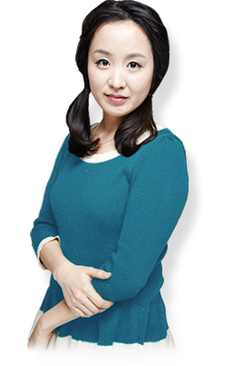
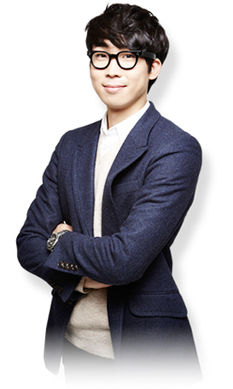
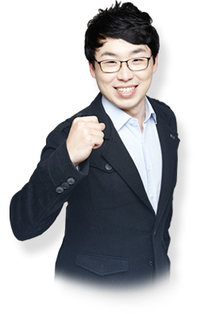

Huvitz People
휴비츠 선배들이 직접 전해드리는 생생한 휴비츠 이야기입니다.
휴비츠는 ‘사람중심의 회사’입니다.
박소미 제조부문/2012년 입사

- 현재 하고 있는 업무는?
- 안녕하세요. 2012년에 입사한 구매혁신팀 박소미입니다. 면접 시, 부장님과의 첫 대면에서 구매업무란 전쟁터에 나가는 병사와 같다라고 하셨습니다. 처음엔 잘 몰랐지만, 지금 생각하면 참 멋지고 적합한 표현 같습니다. 휴비츠 제품라인들이 왜이리 많은지, 또 냉장고보다도 작은 제품들 안에 수만 가지의 부품들이 있고, 또 그 부품들이 빠짐없이 제각기 그 역할을 하고 있는지 입사를 하고 알았습니다. 저를 포함한 구매팀은 그 부품들을 구매하는 업무를 하며 어쩔 땐 납기전쟁을 치르고 또 바로 품질전쟁을 합니다. 전쟁이 많이 벌어져 정신 없기도 하지만 재미있기도 합니다. 많은 업체를 통해 다양한 사람들을 만나게 되고, 자연스럽게 다양한 부품군과의 전쟁을 통해 제조와 설계에 관한 여러 지식도 쌓이게 됩니다. 아직은 저도 신입으로써 부족한 점이 많으나 앞으로 구매분야에 전문적인 지식을 보유하고 더 선진화된 구매업무를 할 계획입니다.
- 입사하고 싶어하는 후배들에게 한마디?
- 휴비츠는 사람중심의 회사입니다. 그래서 사람을 뽑을 때 더욱 신중한 회사인 듯 합니다. 그래서 그런지 신입이 들어오면 "입사동기"란 개념보다 "한 명의 식구"가 늘었단 말이 더욱 잘 어울리는 회사입니다. 신중히 입사한 직원을 소중히 다루기도 합니다. 홈페이지에 있는 복지혜택을 살펴보면 대기업 복지수준만 합니다. 그게 휴비츠의 강점이고 장점이라고 생각합니다.
- 입사 노하우?
- 입사 전에 미리 휴비츠의 시장을 상세히 알아보고, 그 다음 다양한 제품군을 이해하고 지원한 업무에 대해 전문역량을 갖추었다면 입사하실 수 있을 것입니다. 하지만 무엇보다 중요한 것은 "사람"으로써 겸손한 자신감과 부드러운 카리스마로 자신을 어필하기를 바랍니다. 물론 첫 대면인 면접에 자신의 모든 것을 보여줄 수는 없겠지만 간절히 그 순간 최선을 다하는 모습을 보인다면 분명 이심전심으로 알 것입니다.
휴비츠의 ‘멘토, 멘티 제도’는 건강한 직장생활을 만들어줍니다.
최성교 디자인/2011년 입사
- 현재 하고 있는 업무는?
- 디자인팀에서 GUI 업무를 하고 있습니다. GUI 업무는 UX 의 한 부분이 라고 할 수 있는데요. 제품에서 가장 먼저 사용자의 시각에 들어오는 화면 안에 들어 가는 디자인을 하고 있습니다. 우리 회사 제품을 사용 하는 고객 과 시장을 파악 하여 전문성을 바탕으로 ‘ 어떻게 하면 사용자가 조금 더 쉽고 편하게 쓸 수 있을까’를 항시 생각 해야 합니다. 전문가들이 사용 하는 제품을 디자인 하는 GUI 디자이너는 창의성도 중요 하지만 집요한 관찰력과 고민 , 몰입 이 완성도 높은 결과를 가져다 주는 것 같습니다.
- 휴비츠에 다니면서 좋은 점은?
- 저희 회사는 경험과 업무 노하우가 풍부한 선배들이 조언을 해주고 고민을 들어 주는 멘토링 제도 가 있습니다. 멘토님과 점심시간에 식사 후 커피타임을 가지거나 멘토링 지원으로 맛있는 식사, 참여활동 등을 통해 직장 선배 이면서 때로는 친한 형, 누나 같은 멘토를 만날 수 있습니다. 서로 이끌어 줄 수 있는 멘토, 멘티 제도가 있어 건강한 직장생활을 할 수 있는 것 같습니다..
휴비츠는 저에게 ‘보물=비젼’을 제시 해주는 곳!
심영길 연구소/2011년 입사

- 현재 하고 있는 업무는?
- 2011년에 입사한 연구소 H/W팀에 심영길입니다. 렌즈 가공기라는 말을 처음 들었을 땐 굉장히 첨단, 정밀과는 거리가 먼 업무처럼 느껴졌습니다. 하지만 입사 전후 렌즈 가공기의 역할, 기능 그리고 성능을 확인해본 결과, 그 정밀한 제어에 저는 놀라지 않을 수 없었습니다. 그 중 제가 소속한 H/W팀은 매우 정밀한 제어에 필요한 회로구성 및 설계 그리고 정밀 제어가 들어간 Firmware까지 담당해야 하기에 개발 범위가 넓고 다양한 팀입니다. LCD, 모터, 센서 등의 디바이스를 다루며 가공하기 위한 임베디드 시스템 및 제어 프로그램 개발을 하고 있습니다.
- 지원동기는?
- 회사가 저에게 줄 수 있는 가장 큰 것이 무엇인가 생각해보았습니다. 여러 번의 생각 없이 답은 금방 찾을 수 있었습니다. 그것은 바로 ‘비전’이었습니다. 하지만 큰회사, 작은회사를 불문하고 비전을 제시 해주는 회사는 많지 않았습니다. 그러나 휴비츠는 달랐습니다. “정상보다 정상으로 가는 길에 보물이 숨겨 있다”는 말처럼 그렇게 휴비츠는 저에게 여러가지 보물=비전을 제시해주는 곳일 거라 확신이 들었습니다. 높은 성장률과 신규사업, 그리고 다양한 교육의 기회까지.. 앞으로 회사와 함께 정상을 밟을 때까지 많은 보물을 저에게 보여줄 그런 회사였기에 전혀 망설일 필요가 없었습니다.
- 휴비츠에 다니면서 좋은 점은?
- 가장 큰 자랑거리는 바로 회사의 복리후생입니다. 그 중에 아침, 점심, 저녁 맛있는 3식을 모두 제공해주는 것은 저에게 있어 매일매일 있을 “메뉴 고르기” 스트레스를 없애주었으며 경제적으로도 식사비가 절약되는 것은 물론입니다. 게다가 운동을 할 수 있는 개별 체육공간이 있다는 것 또한 남자인 저에게 큰 해택입니다. 이미 복리후생이 좋은 편임에도 불구하고 회사가 끊임없이 더 좋고 다양한 복지를 제공하려 고민하고 있다는 것은 더 큰 만족이 아닐 수 없습니다.
휴비츠는 ‘계속 성장해가고 있는 회사’입니다.
최호근 경영지원/2010년 입사

- 현재 하고 있는 업무는?
- 즐거운직장팀(인사총무)에서 인사업무 및 총무업무를 병행하고 있는 2009년 입사자 최호근 입니다. 담당하는 인사업무는 급여와 교육, 조직활성화를 위한 업무이고, 총무업무로는 기획, 구매, 사무용품지원, 시설관리, 차량관리, 통신관리, 보험관리, 보건, 복리후생, 법제와 법무, 우편물관리, 계약 등을 하는 업무입니다. 이와는 별개로, 대리 이하 직원 중 선발된 인원으로 구성된 FC Huvitz(Fun Company Huvitz)와 함께 눈 뜨면 출근하고 싶어지는 휴비츠를 만들기 위해 각종 활동도 하고 있습니다.
- 휴비츠에 다니면서 좋은 점은?
- 계속 성장해가고 있는 회사, 그 속에서 자신 또한 성장해 갈 수 있는 기회 또한 많다는 점입니다. 자기계발에 대한 지원이 전폭적이며, 아직 제한적이지만 순환보직을 통해 자신에게 맞는 업무를 찾을 수 있는 기회가 주어진다는 점 또한 좋은 점이 아닌가 합니다.
휴비츠는 ‘직원복지’에 있어서 최강이라 자부합니다.
강성길 마케팅/2011년 입사
- 현재 하고 있는 업무는?
- 마케팅부문에서 국내 안경원 및 안과 시장을 담당하고 있는 2011년 입사자 강성길입니다. 업무는 각 지역 10개 대리점(안경 6개, 안과4개) 영업지원과 매출관리를 하고 있습니다. 또한 국내 최초인 검안버스를 이용하여 국내 대학 안경광학과와 안경사협회의 검안 봉사활동을 지원하는 업무를 진행하고 있습니다.
- 지원동기는?
- 일본과 독일 제품이 점유중인 안광학기기 시장에서 국내 최초 검안기를 제작한 휴비츠라는 회사가 이목을 끌었고, 또한 창립 이래 지속적인 성장을 이룩하며 세계시장 No.1을 향한 끊임없는 기술계발과 도전, 직원 복지에 지원을 아끼지 않는 CEO의 경영철학이 휴비츠에 지원하게 된 계기가 되었습니다.
- 업무를 하면서 보람을 느낄 때와 힘들 때는?
- 업무를 하며 가장 보람을 느낄 때는 소외된 이웃들에게 휴비츠의 안광학기기를 이용하여 그들에게 시력검사와 안경을 조제하여 드리며 그분들이 안경을 착용하고 미소를 지을 때 일을 하며 가장 흐뭇함을 느낍니다. 아직 사회 초년생으로 배울 것이 많은 저에게 선배님들의 조언과 격려를 통하여 힘들어도 힘들다는 생각을 가진 적이 없습니다.
- 휴비츠에 다니면서 좋은 점은?
- 대학 졸업 후 첫 직장이지만 직원 복지에 있어서는 중소기업 최강이라고 자부 합니다. 즐거운 직장 만들기 문화(멘토&멘티 제도, Fun Day 행사)와 각종 직원 편의시설 및 동호회 지원, 또한 안마사를 고용하여 직원들의 피로를 풀어주는 것들이 다른 회사에서는 보기 어려운 직원복지라고 생각 합니다